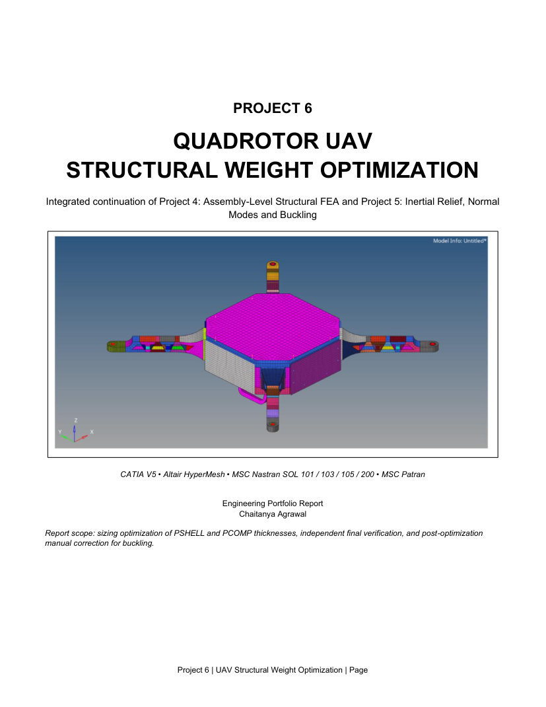

Project 6 · Independent portfolio study
Quadrotor UAV
Structural Weight Optimisation
An integrated continuation of the assembly-level structural assessment: sizing optimisation, post-optimisation buckling review, targeted thickness correction, and independent verification.
CATIA V5 · Altair HyperMesh · MSC Nastran SOL 101 / 103 / 105 / 200 · MSC Patran

01 / Principal results
Mass reduction with verification-led correction
Total UAV mass−37.92%10.71654 kg → 6.65262 kg
Airframe mass−56.31%7.21654 kg → 3.15262 kg
Final maximum composite FI0.18904Below the project criterion of 1.0
Final listed displacement1.5097 mmBaseline: 0.6344 mm
Final listed von Mises stress58.005 MPaBaseline: 20.155 MPa
Minimum first buckling factor3.250Final manually corrected design
The minimum-mass SOL 200 candidate was not treated as the final design because the post-optimisation buckling check identified a shortfall. Selected thicknesses were increased manually, then the corrected design was independently verified. The final design corresponds to the report's cycle-13 row.
02 / Methodology
Analysis workflow
Model and optimisation
- Continued the established four-arm quadrotor assembly and seven-load-case framework from Projects 4 and 5.
- Used a mixed shell, solid, 1D and RBE idealisation with 25,184 elements and 28,743 nodes.
- Used MSC Nastran SOL 200 to size PSHELL thicknesses and individual PCOMP lamina thicknesses.
- Optimisation responses documented for the run included von Mises stress and composite failure index.
Post-optimisation verification
- Reviewed the cycle-12 candidate for linear buckling after optimisation.
- Applied targeted manual thickness changes to address the buckling shortfall.
- Re-ran static, composite failure-index and buckling checks for the corrected design.
- Compared final responses against the Project 4/5 baseline and documented the stiffness–mass–stability trade-off.
03 / Baseline vs final
Key response comparison
| Metric | Project 4/5 baseline | Final corrected design | Change / interpretation |
|---|---|---|---|
| Total UAV mass | 10.71654 kg | 6.65262 kg | −37.92% |
| Airframe mass | 7.21654 kg | 3.15262 kg | −56.31% |
| Maximum listed displacement | 0.6344 mm | 1.5097 mm | Increased compliance |
| Maximum listed von Mises stress | 20.155 MPa | 58.005 MPa | Higher structural utilisation |
| Maximum listed composite FI | 0.02938 | 0.18904 | Below project criterion 1.0 |
| Minimum listed first buckling factor | 43.558 | 3.250 | Reduced stability margin; reported as passing adopted criterion |
04 / Engineering interpretation
What the results show
- The corrected design reduces total assembly mass by approximately 4.064 kg compared with the baseline.
- Displacement and stress increase, showing the expected trade-off between mass reduction and structural response.
- The final reported composite failure index remains below the chosen project criterion.
- The minimum listed buckling factor is much lower than the baseline; buckling therefore remains an important design driver and should not be inferred from static constraints alone.
Scope and limitations: This is an independent portfolio study, not a certified or flight-qualified UAV design. Material strengths are representative values sourced from public information, and conclusions depend on the selected model idealisation, load cases, boundary conditions, failure theory and verification criteria. The SOL 200 objective-row mass is not presented as the final verified mass.
05 / Complete technical report
Report pages
The complete report is displayed below. For readability, open the image in a new tab or zoom your browser.

Page 1 of 20
Use Previous and Next to move through the report.